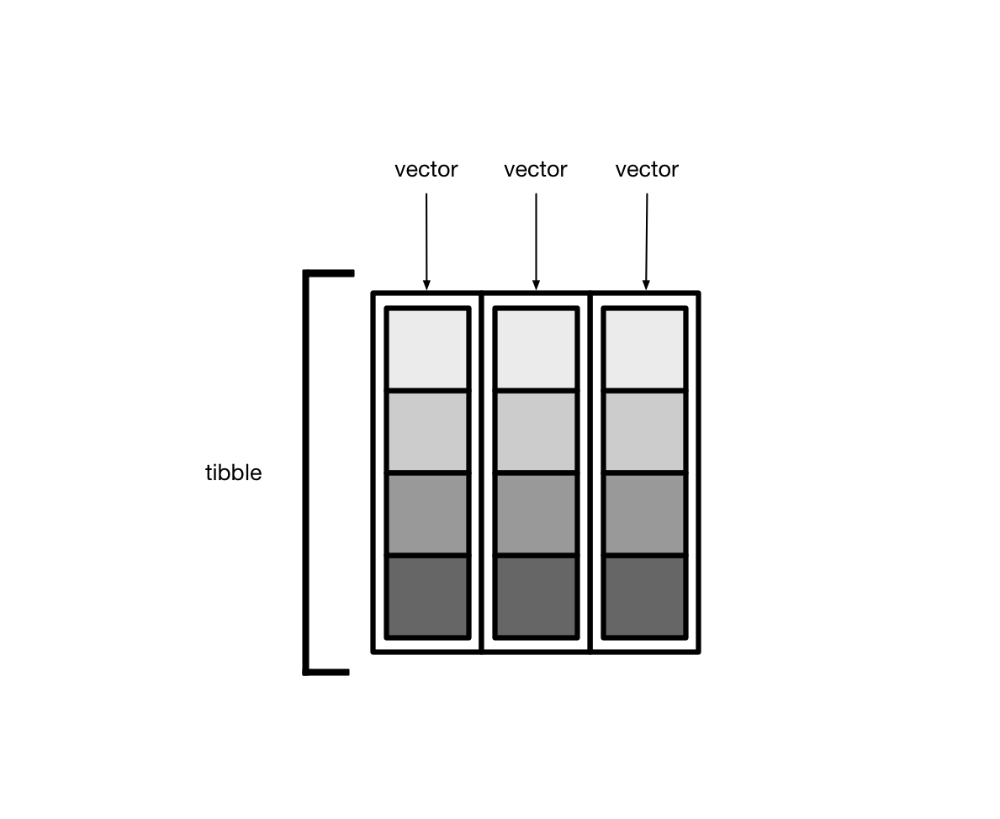
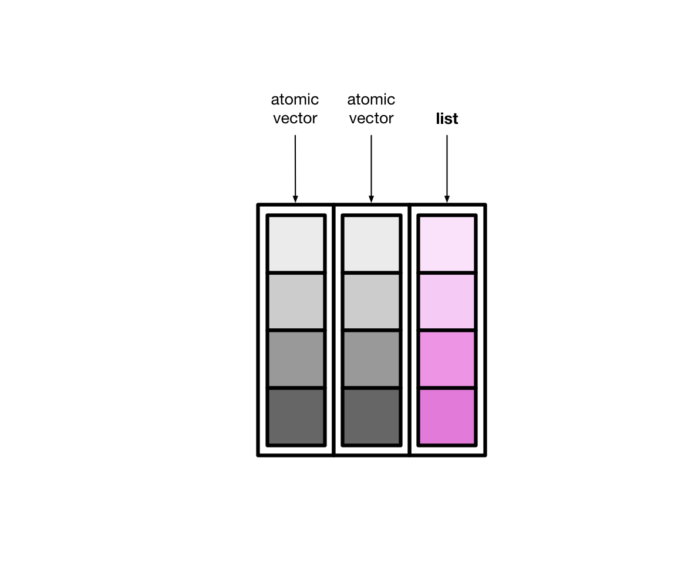

Code
library(tidyverse)
library(magrittr)library(tidyverse)
library(magrittr)tidy-selectIn the end you always want a boolean vector that has the length of the number of columns
Look here for all the possible helper functions.
If you wanna apply a regex yourself you can use the matches-function. However there are “helpers” e.g. starts_with…
# select all columns with three characters
mtcars %>%
select(
matches("^[a-zA-Z]{3}$")
) %>% head mpg cyl
Mazda RX4 21.0 6
Mazda RX4 Wag 21.0 6
Datsun 710 22.8 4
Hornet 4 Drive 21.4 6
Hornet Sportabout 18.7 8
Valiant 18.1 6# cant use logical vector is select (e.g select(mtcars, c(TRUE, FALSE))) does not work
# Must be indexes!
mtcars %>%
select(which(grepl("^[a-zA-Z]{3}$", names(.)))) %>% head mpg cyl
Mazda RX4 21.0 6
Mazda RX4 Wag 21.0 6
Datsun 710 22.8 4
Hornet 4 Drive 21.4 6
Hornet Sportabout 18.7 8
Valiant 18.1 6# select_if can use a boolean vector!! However is superseeded
mtcars %>%
select_if(grepl("^[a-zA-Z]{3}$", names(.))) %>% head mpg cyl
Mazda RX4 21.0 6
Mazda RX4 Wag 21.0 6
Datsun 710 22.8 4
Hornet 4 Drive 21.4 6
Hornet Sportabout 18.7 8
Valiant 18.1 6# do the same in base r
idx = grepl("^[a-zA-Z]{3}$", names(mtcars))
mtcars[, idx] %>% head mpg cyl
Mazda RX4 21.0 6
Mazda RX4 Wag 21.0 6
Datsun 710 22.8 4
Hornet 4 Drive 21.4 6
Hornet Sportabout 18.7 8
Valiant 18.1 6naApproach 1
# setting the value in the second row and third to nineth column to na
mtcars_copy = mtcars
mtcars_copy[2,3:9] = NA
mtcars_copy %>% head mpg cyl disp hp drat wt qsec vs am gear carb
Mazda RX4 21.0 6 160 110 3.90 2.620 16.46 0 1 4 4
Mazda RX4 Wag 21.0 6 NA NA NA NA NA NA NA 4 4
Datsun 710 22.8 4 108 93 3.85 2.320 18.61 1 1 4 1
Hornet 4 Drive 21.4 6 258 110 3.08 3.215 19.44 1 0 3 1
Hornet Sportabout 18.7 8 360 175 3.15 3.440 17.02 0 0 3 2
Valiant 18.1 6 225 105 2.76 3.460 20.22 1 0 3 11. where-tidyselect
where(fn) function. fn is a function that takes an vector, in this case the entire column, as input. Can be an anonymus function!mtcars_copy %>%
select(where(function(x) {
sum(is.na(x)) == 0
})) %>% head mpg cyl gear carb
Mazda RX4 21.0 6 4 4
Mazda RX4 Wag 21.0 6 4 4
Datsun 710 22.8 4 4 1
Hornet 4 Drive 21.4 6 3 1
Hornet Sportabout 18.7 8 3 2
Valiant 18.1 6 3 12. `base-r colsums
use the base-r colSums function which takes only numeric arrays or dataframes as input
is.na(df) checks for each value in the df if it is NA.
And then it implicitly is numeric as false = 0 and true = 1
# 2. base r
mtcars_copy[, colSums(is.na(mtcars_copy)) == 0] mpg cyl gear carb
Mazda RX4 21.0 6 4 4
Mazda RX4 Wag 21.0 6 4 4
Datsun 710 22.8 4 4 1
Hornet 4 Drive 21.4 6 3 1
Hornet Sportabout 18.7 8 3 2
Valiant 18.1 6 3 1
Duster 360 14.3 8 3 4
Merc 240D 24.4 4 4 2
Merc 230 22.8 4 4 2
Merc 280 19.2 6 4 4
Merc 280C 17.8 6 4 4
Merc 450SE 16.4 8 3 3
Merc 450SL 17.3 8 3 3
Merc 450SLC 15.2 8 3 3
Cadillac Fleetwood 10.4 8 3 4
Lincoln Continental 10.4 8 3 4
Chrysler Imperial 14.7 8 3 4
Fiat 128 32.4 4 4 1
Honda Civic 30.4 4 4 2
Toyota Corolla 33.9 4 4 1
Toyota Corona 21.5 4 3 1
Dodge Challenger 15.5 8 3 2
AMC Javelin 15.2 8 3 2
Camaro Z28 13.3 8 3 4
Pontiac Firebird 19.2 8 3 2
Fiat X1-9 27.3 4 4 1
Porsche 914-2 26.0 4 5 2
Lotus Europa 30.4 4 5 2
Ford Pantera L 15.8 8 5 4
Ferrari Dino 19.7 6 5 6
Maserati Bora 15.0 8 5 8
Volvo 142E 21.4 4 4 23. apply
a dataframe is essentially a list of vectors. So we can iterate over it with any mapping-function like apply or map
For the MARGIN-argument we set it to 2. So for the columns
apply(mtcars_copy, 2, function(x)sum(is.na(x)) == 0) mpg cyl disp hp drat wt qsec vs am gear carb
TRUE TRUE FALSE FALSE FALSE FALSE FALSE FALSE FALSE TRUE TRUE apply(mtcars_copy, 1, function(x)sum(is.na(x)) == 0) Mazda RX4 Mazda RX4 Wag Datsun 710 Hornet 4 Drive
TRUE FALSE TRUE TRUE
Hornet Sportabout Valiant Duster 360 Merc 240D
TRUE TRUE TRUE TRUE
Merc 230 Merc 280 Merc 280C Merc 450SE
TRUE TRUE TRUE TRUE
Merc 450SL Merc 450SLC Cadillac Fleetwood Lincoln Continental
TRUE TRUE TRUE TRUE
Chrysler Imperial Fiat 128 Honda Civic Toyota Corolla
TRUE TRUE TRUE TRUE
Toyota Corona Dodge Challenger AMC Javelin Camaro Z28
TRUE TRUE TRUE TRUE
Pontiac Firebird Fiat X1-9 Porsche 914-2 Lotus Europa
TRUE TRUE TRUE TRUE
Ford Pantera L Ferrari Dino Maserati Bora Volvo 142E
TRUE TRUE TRUE TRUE [,col_indices]# 3. apply
mtcars_copy[, apply(mtcars_copy, 2, function(x) sum(is.na(x)) == 0)] mpg cyl gear carb
Mazda RX4 21.0 6 4 4
Mazda RX4 Wag 21.0 6 4 4
Datsun 710 22.8 4 4 1
Hornet 4 Drive 21.4 6 3 1
Hornet Sportabout 18.7 8 3 2
Valiant 18.1 6 3 1
Duster 360 14.3 8 3 4
Merc 240D 24.4 4 4 2
Merc 230 22.8 4 4 2
Merc 280 19.2 6 4 4
Merc 280C 17.8 6 4 4
Merc 450SE 16.4 8 3 3
Merc 450SL 17.3 8 3 3
Merc 450SLC 15.2 8 3 3
Cadillac Fleetwood 10.4 8 3 4
Lincoln Continental 10.4 8 3 4
Chrysler Imperial 14.7 8 3 4
Fiat 128 32.4 4 4 1
Honda Civic 30.4 4 4 2
Toyota Corolla 33.9 4 4 1
Toyota Corona 21.5 4 3 1
Dodge Challenger 15.5 8 3 2
AMC Javelin 15.2 8 3 2
Camaro Z28 13.3 8 3 4
Pontiac Firebird 19.2 8 3 2
Fiat X1-9 27.3 4 4 1
Porsche 914-2 26.0 4 5 2
Lotus Europa 30.4 4 5 2
Ford Pantera L 15.8 8 5 4
Ferrari Dino 19.7 6 5 6
Maserati Bora 15.0 8 5 8
Volvo 142E 21.4 4 4 24. using any
NA# using any
mtcars_copy[, apply(mtcars_copy, 2, function(x) !any(is.na(x)))] mpg cyl gear carb
Mazda RX4 21.0 6 4 4
Mazda RX4 Wag 21.0 6 4 4
Datsun 710 22.8 4 4 1
Hornet 4 Drive 21.4 6 3 1
Hornet Sportabout 18.7 8 3 2
Valiant 18.1 6 3 1
Duster 360 14.3 8 3 4
Merc 240D 24.4 4 4 2
Merc 230 22.8 4 4 2
Merc 280 19.2 6 4 4
Merc 280C 17.8 6 4 4
Merc 450SE 16.4 8 3 3
Merc 450SL 17.3 8 3 3
Merc 450SLC 15.2 8 3 3
Cadillac Fleetwood 10.4 8 3 4
Lincoln Continental 10.4 8 3 4
Chrysler Imperial 14.7 8 3 4
Fiat 128 32.4 4 4 1
Honda Civic 30.4 4 4 2
Toyota Corolla 33.9 4 4 1
Toyota Corona 21.5 4 3 1
Dodge Challenger 15.5 8 3 2
AMC Javelin 15.2 8 3 2
Camaro Z28 13.3 8 3 4
Pontiac Firebird 19.2 8 3 2
Fiat X1-9 27.3 4 4 1
Porsche 914-2 26.0 4 5 2
Lotus Europa 30.4 4 5 2
Ford Pantera L 15.8 8 5 4
Ferrari Dino 19.7 6 5 6
Maserati Bora 15.0 8 5 8
Volvo 142E 21.4 4 4 2dplyr select
# add a string column
mtcars["string"] = "a"
# select only string columns or numeric ones with a mean > 10
mtcars %>%
dplyr::select(
where(
function(x) is.character(x) | mean(x) > 10
)
)Warning in mean.default(x): argument is not numeric or logical: returning NA mpg disp hp qsec string
Mazda RX4 21.0 160.0 110 16.46 a
Mazda RX4 Wag 21.0 160.0 110 17.02 a
Datsun 710 22.8 108.0 93 18.61 a
Hornet 4 Drive 21.4 258.0 110 19.44 a
Hornet Sportabout 18.7 360.0 175 17.02 a
Valiant 18.1 225.0 105 20.22 a
Duster 360 14.3 360.0 245 15.84 a
Merc 240D 24.4 146.7 62 20.00 a
Merc 230 22.8 140.8 95 22.90 a
Merc 280 19.2 167.6 123 18.30 a
Merc 280C 17.8 167.6 123 18.90 a
Merc 450SE 16.4 275.8 180 17.40 a
Merc 450SL 17.3 275.8 180 17.60 a
Merc 450SLC 15.2 275.8 180 18.00 a
Cadillac Fleetwood 10.4 472.0 205 17.98 a
Lincoln Continental 10.4 460.0 215 17.82 a
Chrysler Imperial 14.7 440.0 230 17.42 a
Fiat 128 32.4 78.7 66 19.47 a
Honda Civic 30.4 75.7 52 18.52 a
Toyota Corolla 33.9 71.1 65 19.90 a
Toyota Corona 21.5 120.1 97 20.01 a
Dodge Challenger 15.5 318.0 150 16.87 a
AMC Javelin 15.2 304.0 150 17.30 a
Camaro Z28 13.3 350.0 245 15.41 a
Pontiac Firebird 19.2 400.0 175 17.05 a
Fiat X1-9 27.3 79.0 66 18.90 a
Porsche 914-2 26.0 120.3 91 16.70 a
Lotus Europa 30.4 95.1 113 16.90 a
Ford Pantera L 15.8 351.0 264 14.50 a
Ferrari Dino 19.7 145.0 175 15.50 a
Maserati Bora 15.0 301.0 335 14.60 a
Volvo 142E 21.4 121.0 109 18.60 amtcars %>%
select(
where(function(x){
if(is.numeric(x)){
mean(x) > 10
}else{
is.character(x) # must return true or false
}
})
) mpg disp hp qsec string
Mazda RX4 21.0 160.0 110 16.46 a
Mazda RX4 Wag 21.0 160.0 110 17.02 a
Datsun 710 22.8 108.0 93 18.61 a
Hornet 4 Drive 21.4 258.0 110 19.44 a
Hornet Sportabout 18.7 360.0 175 17.02 a
Valiant 18.1 225.0 105 20.22 a
Duster 360 14.3 360.0 245 15.84 a
Merc 240D 24.4 146.7 62 20.00 a
Merc 230 22.8 140.8 95 22.90 a
Merc 280 19.2 167.6 123 18.30 a
Merc 280C 17.8 167.6 123 18.90 a
Merc 450SE 16.4 275.8 180 17.40 a
Merc 450SL 17.3 275.8 180 17.60 a
Merc 450SLC 15.2 275.8 180 18.00 a
Cadillac Fleetwood 10.4 472.0 205 17.98 a
Lincoln Continental 10.4 460.0 215 17.82 a
Chrysler Imperial 14.7 440.0 230 17.42 a
Fiat 128 32.4 78.7 66 19.47 a
Honda Civic 30.4 75.7 52 18.52 a
Toyota Corolla 33.9 71.1 65 19.90 a
Toyota Corona 21.5 120.1 97 20.01 a
Dodge Challenger 15.5 318.0 150 16.87 a
AMC Javelin 15.2 304.0 150 17.30 a
Camaro Z28 13.3 350.0 245 15.41 a
Pontiac Firebird 19.2 400.0 175 17.05 a
Fiat X1-9 27.3 79.0 66 18.90 a
Porsche 914-2 26.0 120.3 91 16.70 a
Lotus Europa 30.4 95.1 113 16.90 a
Ford Pantera L 15.8 351.0 264 14.50 a
Ferrari Dino 19.7 145.0 175 15.50 a
Maserati Bora 15.0 301.0 335 14.60 a
Volvo 142E 21.4 121.0 109 18.60 aapply|map
take care !Apply returns weird classes!!
Almost all of them should be true! Except the last one…
apply(mtcars, 2, is.numeric) mpg cyl disp hp drat wt qsec vs am gear carb
FALSE FALSE FALSE FALSE FALSE FALSE FALSE FALSE FALSE FALSE FALSE
string
FALSE map_lglf_ = function(df) {
idx = map_lgl(df, function(x) {
if (is.numeric(x)) {
return(mean(x) > 20)
}
if (is.character(x)) {
return(TRUE)
}
})
return(idx)
}
mtcars[,f_(mtcars)] mpg disp hp string
Mazda RX4 21.0 160.0 110 a
Mazda RX4 Wag 21.0 160.0 110 a
Datsun 710 22.8 108.0 93 a
Hornet 4 Drive 21.4 258.0 110 a
Hornet Sportabout 18.7 360.0 175 a
Valiant 18.1 225.0 105 a
Duster 360 14.3 360.0 245 a
Merc 240D 24.4 146.7 62 a
Merc 230 22.8 140.8 95 a
Merc 280 19.2 167.6 123 a
Merc 280C 17.8 167.6 123 a
Merc 450SE 16.4 275.8 180 a
Merc 450SL 17.3 275.8 180 a
Merc 450SLC 15.2 275.8 180 a
Cadillac Fleetwood 10.4 472.0 205 a
Lincoln Continental 10.4 460.0 215 a
Chrysler Imperial 14.7 440.0 230 a
Fiat 128 32.4 78.7 66 a
Honda Civic 30.4 75.7 52 a
Toyota Corolla 33.9 71.1 65 a
Toyota Corona 21.5 120.1 97 a
Dodge Challenger 15.5 318.0 150 a
AMC Javelin 15.2 304.0 150 a
Camaro Z28 13.3 350.0 245 a
Pontiac Firebird 19.2 400.0 175 a
Fiat X1-9 27.3 79.0 66 a
Porsche 914-2 26.0 120.3 91 a
Lotus Europa 30.4 95.1 113 a
Ford Pantera L 15.8 351.0 264 a
Ferrari Dino 19.7 145.0 175 a
Maserati Bora 15.0 301.0 335 a
Volvo 142E 21.4 121.0 109 amtcars %>%
select(
where(
function(x)x[[1]] == "a"
)
) string
Mazda RX4 a
Mazda RX4 Wag a
Datsun 710 a
Hornet 4 Drive a
Hornet Sportabout a
Valiant a
Duster 360 a
Merc 240D a
Merc 230 a
Merc 280 a
Merc 280C a
Merc 450SE a
Merc 450SL a
Merc 450SLC a
Cadillac Fleetwood a
Lincoln Continental a
Chrysler Imperial a
Fiat 128 a
Honda Civic a
Toyota Corolla a
Toyota Corona a
Dodge Challenger a
AMC Javelin a
Camaro Z28 a
Pontiac Firebird a
Fiat X1-9 a
Porsche 914-2 a
Lotus Europa a
Ford Pantera L a
Ferrari Dino a
Maserati Bora a
Volvo 142E aThe docs say about where:
where(): Applies a function to all variables and selects those for which the function returns TRUE.
So it essentially loops over the columns like lapply, whereas a code like this using the selection helpers only looks at the names of the variables:
mtcars %>% select(matches("^d")) %>% head disp drat
Mazda RX4 160 3.90
Mazda RX4 Wag 160 3.90
Datsun 710 108 3.85
Hornet 4 Drive 258 3.08
Hornet Sportabout 360 3.15
Valiant 225 2.76This works because the “normal” select also takes indexes and by looping over the columns with map_dbl and checking which mean > 10 returns 1 we get the indexes
library(purrr)
mtcars %>% select(which(map_dbl(.,
~ mean(.x > 10)) == 1)) %>% head(n=2) mpg disp hp qsec string
Mazda RX4 21 160 110 16.46 a
Mazda RX4 Wag 21 160 110 17.02 aThe same with where just that we need to take care of the string column as the function would return NA and that cant be used as index..
library(purrr)
mtcars %>% select(where(~mean(.x) > 10 & !is.na(mean(.x))))Warning in mean.default(.x): argument is not numeric or logical: returning NA
Warning in mean.default(.x): argument is not numeric or logical: returning NA mpg disp hp qsec
Mazda RX4 21.0 160.0 110 16.46
Mazda RX4 Wag 21.0 160.0 110 17.02
Datsun 710 22.8 108.0 93 18.61
Hornet 4 Drive 21.4 258.0 110 19.44
Hornet Sportabout 18.7 360.0 175 17.02
Valiant 18.1 225.0 105 20.22
Duster 360 14.3 360.0 245 15.84
Merc 240D 24.4 146.7 62 20.00
Merc 230 22.8 140.8 95 22.90
Merc 280 19.2 167.6 123 18.30
Merc 280C 17.8 167.6 123 18.90
Merc 450SE 16.4 275.8 180 17.40
Merc 450SL 17.3 275.8 180 17.60
Merc 450SLC 15.2 275.8 180 18.00
Cadillac Fleetwood 10.4 472.0 205 17.98
Lincoln Continental 10.4 460.0 215 17.82
Chrysler Imperial 14.7 440.0 230 17.42
Fiat 128 32.4 78.7 66 19.47
Honda Civic 30.4 75.7 52 18.52
Toyota Corolla 33.9 71.1 65 19.90
Toyota Corona 21.5 120.1 97 20.01
Dodge Challenger 15.5 318.0 150 16.87
AMC Javelin 15.2 304.0 150 17.30
Camaro Z28 13.3 350.0 245 15.41
Pontiac Firebird 19.2 400.0 175 17.05
Fiat X1-9 27.3 79.0 66 18.90
Porsche 914-2 26.0 120.3 91 16.70
Lotus Europa 30.4 95.1 113 16.90
Ford Pantera L 15.8 351.0 264 14.50
Ferrari Dino 19.7 145.0 175 15.50
Maserati Bora 15.0 301.0 335 14.60
Volvo 142E 21.4 121.0 109 18.60# pmap loops over multiple lists|vectors at the same time
# in this case all the numeric columns in mtcars
# the ~median(c(...)) says take all the cols
mtcars %>%
mutate(
med = pmap_dbl(select(., where(is.numeric)), ~median(c(...), na.rm = T))
) %>% glimpseRows: 32
Columns: 13
$ mpg <dbl> 21.0, 21.0, 22.8, 21.4, 18.7, 18.1, 14.3, 24.4, 22.8, 19.2, 17.…
$ cyl <dbl> 6, 6, 4, 6, 8, 6, 8, 4, 4, 6, 6, 8, 8, 8, 8, 8, 8, 4, 4, 4, 4, …
$ disp <dbl> 160.0, 160.0, 108.0, 258.0, 360.0, 225.0, 360.0, 146.7, 140.8, …
$ hp <dbl> 110, 110, 93, 110, 175, 105, 245, 62, 95, 123, 123, 180, 180, 1…
$ drat <dbl> 3.90, 3.90, 3.85, 3.08, 3.15, 2.76, 3.21, 3.69, 3.92, 3.92, 3.9…
$ wt <dbl> 2.620, 2.875, 2.320, 3.215, 3.440, 3.460, 3.570, 3.190, 3.150, …
$ qsec <dbl> 16.46, 17.02, 18.61, 19.44, 17.02, 20.22, 15.84, 20.00, 22.90, …
$ vs <dbl> 0, 0, 1, 1, 0, 1, 0, 1, 1, 1, 1, 0, 0, 0, 0, 0, 0, 1, 1, 1, 1, …
$ am <dbl> 1, 1, 1, 0, 0, 0, 0, 0, 0, 0, 0, 0, 0, 0, 0, 0, 0, 1, 1, 1, 0, …
$ gear <dbl> 4, 4, 4, 3, 3, 3, 3, 4, 4, 4, 4, 3, 3, 3, 3, 3, 3, 4, 4, 4, 3, …
$ carb <dbl> 4, 4, 1, 1, 2, 1, 4, 2, 2, 4, 4, 3, 3, 3, 4, 4, 4, 1, 2, 1, 1, …
$ string <chr> "a", "a", "a", "a", "a", "a", "a", "a", "a", "a", "a", "a", "a"…
$ med <dbl> 4.000, 4.000, 4.000, 3.215, 3.440, 3.460, 4.000, 4.000, 4.000, …do the same as above, but only use two cols and get their mean
mtcars %>%
mutate(
med = pmap_dbl(select(., matches("disp|hp")), ~median(c(...), na.rm = T))
) %>% glimpseRows: 32
Columns: 13
$ mpg <dbl> 21.0, 21.0, 22.8, 21.4, 18.7, 18.1, 14.3, 24.4, 22.8, 19.2, 17.…
$ cyl <dbl> 6, 6, 4, 6, 8, 6, 8, 4, 4, 6, 6, 8, 8, 8, 8, 8, 8, 4, 4, 4, 4, …
$ disp <dbl> 160.0, 160.0, 108.0, 258.0, 360.0, 225.0, 360.0, 146.7, 140.8, …
$ hp <dbl> 110, 110, 93, 110, 175, 105, 245, 62, 95, 123, 123, 180, 180, 1…
$ drat <dbl> 3.90, 3.90, 3.85, 3.08, 3.15, 2.76, 3.21, 3.69, 3.92, 3.92, 3.9…
$ wt <dbl> 2.620, 2.875, 2.320, 3.215, 3.440, 3.460, 3.570, 3.190, 3.150, …
$ qsec <dbl> 16.46, 17.02, 18.61, 19.44, 17.02, 20.22, 15.84, 20.00, 22.90, …
$ vs <dbl> 0, 0, 1, 1, 0, 1, 0, 1, 1, 1, 1, 0, 0, 0, 0, 0, 0, 1, 1, 1, 1, …
$ am <dbl> 1, 1, 1, 0, 0, 0, 0, 0, 0, 0, 0, 0, 0, 0, 0, 0, 0, 1, 1, 1, 0, …
$ gear <dbl> 4, 4, 4, 3, 3, 3, 3, 4, 4, 4, 4, 3, 3, 3, 3, 3, 3, 4, 4, 4, 3, …
$ carb <dbl> 4, 4, 1, 1, 2, 1, 4, 2, 2, 4, 4, 3, 3, 3, 4, 4, 4, 1, 2, 1, 1, …
$ string <chr> "a", "a", "a", "a", "a", "a", "a", "a", "a", "a", "a", "a", "a"…
$ med <dbl> 135.00, 135.00, 100.50, 184.00, 267.50, 165.00, 302.50, 104.35,…or simpler if you know the columns
mtcars %>%
rowwise() %>%
mutate(
med = median(disp, hp)
) %>% glimpseRows: 32
Columns: 13
Rowwise:
$ mpg <dbl> 21.0, 21.0, 22.8, 21.4, 18.7, 18.1, 14.3, 24.4, 22.8, 19.2, 17.…
$ cyl <dbl> 6, 6, 4, 6, 8, 6, 8, 4, 4, 6, 6, 8, 8, 8, 8, 8, 8, 4, 4, 4, 4, …
$ disp <dbl> 160.0, 160.0, 108.0, 258.0, 360.0, 225.0, 360.0, 146.7, 140.8, …
$ hp <dbl> 110, 110, 93, 110, 175, 105, 245, 62, 95, 123, 123, 180, 180, 1…
$ drat <dbl> 3.90, 3.90, 3.85, 3.08, 3.15, 2.76, 3.21, 3.69, 3.92, 3.92, 3.9…
$ wt <dbl> 2.620, 2.875, 2.320, 3.215, 3.440, 3.460, 3.570, 3.190, 3.150, …
$ qsec <dbl> 16.46, 17.02, 18.61, 19.44, 17.02, 20.22, 15.84, 20.00, 22.90, …
$ vs <dbl> 0, 0, 1, 1, 0, 1, 0, 1, 1, 1, 1, 0, 0, 0, 0, 0, 0, 1, 1, 1, 1, …
$ am <dbl> 1, 1, 1, 0, 0, 0, 0, 0, 0, 0, 0, 0, 0, 0, 0, 0, 0, 1, 1, 1, 0, …
$ gear <dbl> 4, 4, 4, 3, 3, 3, 3, 4, 4, 4, 4, 3, 3, 3, 3, 3, 3, 4, 4, 4, 3, …
$ carb <dbl> 4, 4, 1, 1, 2, 1, 4, 2, 2, 4, 4, 3, 3, 3, 4, 4, 4, 1, 2, 1, 1, …
$ string <chr> "a", "a", "a", "a", "a", "a", "a", "a", "a", "a", "a", "a", "a"…
$ med <dbl> 160.0, 160.0, 108.0, 258.0, 360.0, 225.0, 360.0, 146.7, 140.8, …Steps:
group_by the grouping variable
summarise get the max value per group
inner_join the result with the original data-frame
# which of the cyl-groups contains the highest disp
top = mtcars %>%
group_by(cyl) %>%
summarise(m = max(disp)) %>%
arrange(desc(m)) %>%
ungroup() %>%
mutate(top2 = if_else(row_number() == 1, T, F)) %>%
inner_join(
., mtcars, by=c("cyl")
)
top# A tibble: 32 × 14
cyl m top2 mpg disp hp drat wt qsec vs am gear carb
<dbl> <dbl> <lgl> <dbl> <dbl> <dbl> <dbl> <dbl> <dbl> <dbl> <dbl> <dbl> <dbl>
1 8 472 TRUE 18.7 360 175 3.15 3.44 17.0 0 0 3 2
2 8 472 TRUE 14.3 360 245 3.21 3.57 15.8 0 0 3 4
3 8 472 TRUE 16.4 276. 180 3.07 4.07 17.4 0 0 3 3
4 8 472 TRUE 17.3 276. 180 3.07 3.73 17.6 0 0 3 3
5 8 472 TRUE 15.2 276. 180 3.07 3.78 18 0 0 3 3
6 8 472 TRUE 10.4 472 205 2.93 5.25 18.0 0 0 3 4
7 8 472 TRUE 10.4 460 215 3 5.42 17.8 0 0 3 4
8 8 472 TRUE 14.7 440 230 3.23 5.34 17.4 0 0 3 4
9 8 472 TRUE 15.5 318 150 2.76 3.52 16.9 0 0 3 2
10 8 472 TRUE 15.2 304 150 3.15 3.44 17.3 0 0 3 2
# ℹ 22 more rows
# ℹ 1 more variable: string <chr>df = structure(list(id = c(1, 1, 1, 1, 1, 1, 1, 1, 1, 1, 2, 2, 2,
2, 2, 2, 2, 2, 2, 2, 3, 3, 3, 3, 3, 3, 3, 3, 3, 3, 4, 4, 4, 4,
4, 4, 4, 4, 4, 4, 5, 5, 5, 5, 5, 5, 5, 5, 5, 5, 6, 6, 6, 6, 6,
6, 6, 6, 6, 6, 7, 7, 7, 7, 7, 7, 7, 7, 7, 7, 8, 8, 8, 8, 8, 8,
8, 8, 8, 8, 9, 9, 9, 9, 9, 9, 9, 9, 9, 9), year = c("2017", "2018",
"2019", "2020", "2021", "2022", "2023", "2024", "2025", "2026",
"2017", "2018", "2019", "2020", "2021", "2022", "2023", "2024",
"2025", "2026", "2017", "2018", "2019", "2020", "2021", "2022",
"2023", "2024", "2025", "2026", "2017", "2018", "2019", "2020",
"2021", "2022", "2023", "2024", "2025", "2026", "2017", "2018",
"2019", "2020", "2021", "2022", "2023", "2024", "2025", "2026",
"2017", "2018", "2019", "2020", "2021", "2022", "2023", "2024",
"2025", "2026", "2017", "2018", "2019", "2020", "2021", "2022",
"2023", "2024", "2025", "2026", "2017", "2018", "2019", "2020",
"2021", "2022", "2023", "2024", "2025", "2026", "2017", "2018",
"2019", "2020", "2021", "2022", "2023", "2024", "2025", "2026"
), volume = c(0.0013, 0.0013, 0.0012579, 0.0011895, 0.0011421,
0.0010842, 0.0010211, 0.0010158, 0.00099474, 0.00092632, 0.07878,
0.078791, 0.077295, 0.076638, 0.075538, 0.074468, 0.074776, 0.074051,
0.071706, 0.068056, 0.023269, 0.023011, 0.022374, 0.021962, 0.021408,
0.020949, 0.020811, 0.020354, 0.019309, 0.018042, 0.0004, 0.0004,
0.00038421, 0.00035263, 0.00033158, 0.00032105, 0.00026842, 0.00028421,
0.00026842, 0.00024211, 0.0002, 0.0001, 0.00011579, 0, 0, 0,
0, 0, 0, 0, 0.028422, 0.028361, 0.027768, 0.027501, 0.027029,
0.02651, 0.026588, 0.026209, 0.025094, 0.023391, 0.0001, 0.0001,
0, 0, 0, 0, 0, 0, 0, 0, 0.0047, 0.0047158, 0.0048368, 0.0048316,
0.0049263, 0.0049737, 0.0049947, 0.0051684, 0.0052526, 0.0051842,
0.0106, 0.010389, 0.010279, 0.010005, 0.0098421, 0.0096368, 0.0094053,
0.0093368, 0.0092526, 0.0089316)), class = c("tbl_df", "tbl",
"data.frame"), row.names = c(NA, -90L))
df %>%
group_by(id) %>%
summarise(m = max(volume)) %>%
arrange(desc(m)) %>%
mutate(top3 = if_else(row_number() %in% c(1, 2, 3), T, F)) %>%
inner_join(., df, by = c("id")) -> top123dplyr)l = tibble::tibble(x = runif(10),
y = 1:10)
typeof(l)[1] "list" image source:
 image source:
It seems to be common to create list columns by modifying an existing “normal” tibble. Three common ways are:
nest()summarise and listmutate and mapnest()When calling nest the first argument is the new column-name. In this case it is cars.
The second argument are the columns you want to have in the resulting dataframe in each element of the list column.
Each column you do not specify automatically becomes a grouping variable and all the resulting tibble will have as many rows as unique combinations in these grouping variables there are.
mtcars_with_list_col = mtcars %>%
mutate(name = rownames(.)) %>%
select(cyl, mpg, name) %>%
nest(cars = c(mpg, name))
# inspect it
str(mtcars_with_list_col)tibble [3 × 2] (S3: tbl_df/tbl/data.frame)
$ cyl : num [1:3] 6 4 8
$ cars:List of 3
..$ : tibble [7 × 2] (S3: tbl_df/tbl/data.frame)
.. ..$ mpg : num [1:7] 21 21 21.4 18.1 19.2 17.8 19.7
.. ..$ name: chr [1:7] "Mazda RX4" "Mazda RX4 Wag" "Hornet 4 Drive" "Valiant" ...
..$ : tibble [11 × 2] (S3: tbl_df/tbl/data.frame)
.. ..$ mpg : num [1:11] 22.8 24.4 22.8 32.4 30.4 33.9 21.5 27.3 26 30.4 ...
.. ..$ name: chr [1:11] "Datsun 710" "Merc 240D" "Merc 230" "Fiat 128" ...
..$ : tibble [14 × 2] (S3: tbl_df/tbl/data.frame)
.. ..$ mpg : num [1:14] 18.7 14.3 16.4 17.3 15.2 10.4 10.4 14.7 15.5 15.2 ...
.. ..$ name: chr [1:14] "Hornet Sportabout" "Duster 360" "Merc 450SE" "Merc 450SL" ...summarise and listNormally you use group_by and summarise to collapse groups into single rows.
You can also use group_by, summarise and list to create atomic vectors where each vector corresponds to one group of cyl
mtcars_names_per_cyl = mtcars %>%
mutate(name = rownames(.)) %>%
group_by(cyl) %>%
summarise(cars_per_cyl = list(name))mtcars_names_per_cyl_sorted = mtcars %>%
mutate(name = rownames(.)) %>%
group_by(cyl) %>%
summarise(cars_per_cyl = list(sort(name)))mutate and mapn_values_per_car_letter = mtcars %>%
mutate(name = rownames(.)) %>%
mutate(random = map(name, ~ rnorm(n = str_length(.x)))) %>%
select(name, random)
str(n_values_per_car_letter) 'data.frame': 32 obs. of 2 variables:
$ name : chr "Mazda RX4" "Mazda RX4 Wag" "Datsun 710" "Hornet 4 Drive" ...
$ random:List of 32
..$ : num -0.195 -0.184 -1.368 0.846 2.033 ...
..$ : num 1.95 -1.198 0.853 -0.767 -0.574 ...
..$ : num 1.78 1.217 0.113 0.972 0.736 ...
..$ : num 0.269288 -0.000404 1.121984 -1.387668 -0.210925 ...
..$ : num 0.2822 -1.1945 1.0201 0.054 -0.0213 ...
..$ : num -0.0744 -1.1625 0.7702 -0.1963 0.2054 ...
..$ : num 1.981 -1.106 -0.361 1.077 -0.934 ...
..$ : num -0.0841 0.7739 -0.0121 0.6751 -1.5646 ...
..$ : num -1.904 -1.699 -1.12 0.486 -1.186 ...
..$ : num -1.406 -0.23 2.439 -0.539 0.339 ...
..$ : num 0.586 -0.797 0.342 -1.053 -1.277 ...
..$ : num 0.6337 0.2869 -0.4436 -1.3288 0.0312 ...
..$ : num 1.232 0.246 -0.746 -1.04 -1.523 ...
..$ : num -0.9038 -0.5822 0.3398 0.0425 0.6088 ...
..$ : num -0.281 -1.098 0.493 0.063 -0.245 ...
..$ : num -0.62 1.7 -1.036 0.302 0.788 ...
..$ : num 0.204 -1.111 0.251 1.865 -0.609 ...
..$ : num -0.0874 1.3393 0.291 1.0198 0.2712 ...
..$ : num -0.986 0.64 -2.273 -1.432 -0.485 ...
..$ : num 0.563189 0.879347 0.337097 -0.360936 0.000299 ...
..$ : num -0.98 -0.149 2.472 -1.621 -0.935 ...
..$ : num -0.332 0.066 1.237 0.946 0.119 ...
..$ : num 0.3958 0.0535 -0.4067 -1.2724 -0.2164 ...
..$ : num 0.127 0.814 0.698 1.298 0.927 ...
..$ : num -0.9758 -0.0991 1.136 -0.8737 0.1375 ...
..$ : num -1.091 -0.453 -0.488 0.77 1.143 ...
..$ : num 0.06291 1.41201 0.00426 0.57423 2.00933 ...
..$ : num -0.661 -0.408 -0.175 -1.412 -0.545 ...
..$ : num -1.233 -0.819 1.935 0.673 1.778 ...
..$ : num 0.632 0.865 -1.132 0.926 0.468 ...
..$ : num -1.128 -0.472 -1.043 0.193 -0.249 ...
..$ : num -0.92 0.112 -0.135 -1.688 -1.949 ...Version 1
mtcars %>%
mutate(name = rownames(.)) %>%
nest(data_per_cyl = !cyl) %>%
mutate(
nrow_per_cyl = map_dbl(data_per_cyl, nrow)
)# A tibble: 3 × 3
cyl data_per_cyl nrow_per_cyl
<dbl> <list> <dbl>
1 6 <tibble [7 × 12]> 7
2 4 <tibble [11 × 12]> 11
3 8 <tibble [14 × 12]> 14Version 2
rowwisemtcars %>%
mutate(name = rownames(.)) %>%
nest(data_per_cyl = !cyl) %>%
rowwise() %>%
mutate(
nrow_per_cyl = nrow(data_per_cyl)
)# A tibble: 3 × 3
# Rowwise:
cyl data_per_cyl nrow_per_cyl
<dbl> <list> <int>
1 6 <tibble [7 × 12]> 7
2 4 <tibble [11 × 12]> 11
3 8 <tibble [14 × 12]> 14